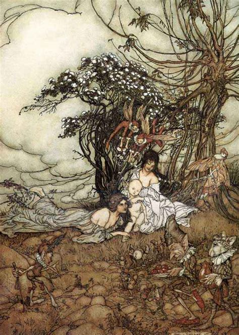

A changeling, also historically referred to as an auf or oaf, is a human-like creature found in folklore and folk religion throughout Europe. A changeling was believed to be a fairy child that had been left in place of a human child stolen by the fairies. The theme of the swapped child is common in medieval literature and reflects concern over infants thought to be afflicted with unexplained diseases, disorders, or developmental disabilities.
A changeling is typically identifiable via a number of traits; in Irish legend, a fairy child may appear sickly and won't grow in size like a normal child, and may have notable physical characteristics such as a beard or long teeth. They may also display intelligence far beyond their apparent years, as well as possess uncanny insight. A common way that a changeling could identify itself is through displaying unusual behaviour when it thinks it's alone, such as jumping about, dancing or playing an instrument — though this last example is found only within Irish and Scottish legend
One belief is that trolls thought that it was more respectable to be raised by humans and that they wanted to give their own children a human upbringing. Some people believed that trolls would take unbaptised children.[citation needed] Once children had been baptized and therefore become part of the Church, the trolls could not take them. Beauty in human children and young women, particularly traits which evoke brightness or reflectivity, such as blonde hair and blue or silver eyes, are said to attract fairies, as they perhaps find preciousness in these perceived traits. In Scottish folklore, the children might be replacements for fairy children in the tithe to Hell; this is best known from the ballad of Tam Lin. According to common Scottish myths, a child born with a caul (part of the amniotic membrane) across their face is a changeling, and will soon die (is "of fey birth"). Other folklore says that human milk is necessary for fairy children to survive. In these cases either the newborn human child would be switched with a fairy baby to be suckled by the human mother, or the human mother would be taken back to the fairy world to breastfeed the fairy babies. It is also thought that human midwives were necessary to bring fairy babies into the world. Some stories tell of changelings who forget they are not human and proceed to live a human life. Changelings who do not forget, however, in some stories return to their fairy family, possibly leaving the human family without warning. The human child that was taken may often stay with the fairy family forever. Feeling connected to the fate of a changeling, there are families who merely turn their changeling loose to the wilderness. Some folklorists believe that fairies were memories of inhabitants of various regions in Europe who had been driven into hiding by invaders. They held that changelings had actually occurred; the hiding people would exchange their own sickly children for the healthy children of the occupying invader.